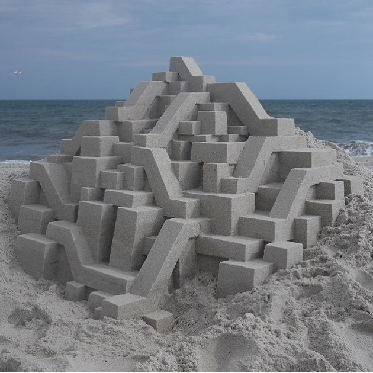

A website could be thought of as a sandcastle. It’s made carefully by hand and maybe just on a whim on a nice day of inspiration, constructed from components borrowed from its surrounding environment. The sand that makes up your castle is comprised of or is made possible by all the achievement along the way of the Internet’s lifespan, and with it it carries these fine grains that have been worn down over time and through the constant flowing force of the ocean, the culture and community of the web. Your tools could be simple and your outcomes crude, or maybe highly and shockingly precisely sculpted, but your castle’s foundations are based in the accomplishments of those that came before it.
My website is a sandcastle anticipating the rising tide
Sandcastle by Calvin Seibert via Micah Lexier’s IG page … (there are some cool things that still exist on social media, okay!)
Either way, it’s a structure that is high-maintenance, delicate, and ephemeral. Despite the time you may invest in its construction, a sandcastle isn’t forever. Before you can even get a chance to savour your creation, a wave, a big shift in the culture or structure of the web, can quickly wash over your work and leave it broken and unusable. However, this wave was sent from the vast and powerful being that is the collective culture and community of web, and along with it it brings new knowledge that helps you begin make an all-new castle. (Perhaps the incoming of water with rising sea-levels can also be compared to how large social media platforms are overwhelmingly engulfing an individual-focused web experience…)